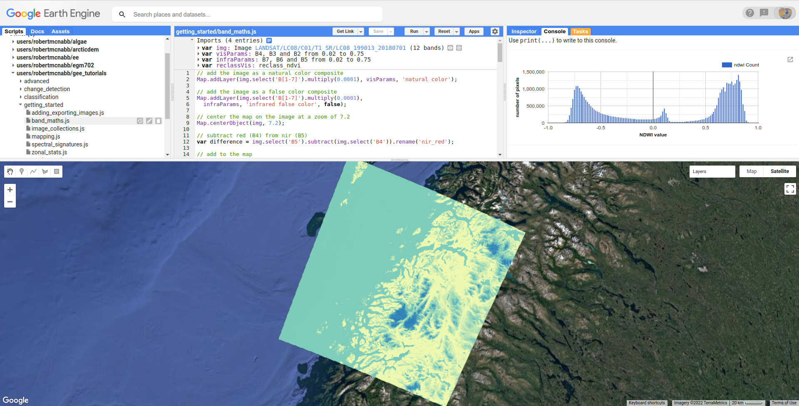

dem differencing
Be sure to download all the data from the Practical 1 area on Blackboard before starting, or from the google drive link, then extract the zip file. You should have the following files/folders available:
├─ 1979_shapes.*
├─ 1984_shapes.*
├─ ALPSMLC30_N046W123_DSM.tif
├─ MtStHelens_Aug1984_10m_Z.tif
├─ MtStHelens_Jul1979_10m_Z.tif
├─ LM02_L1TP_049028_19790719_20180419_01_T2.tif
└─ LT05_L1TP_046028_19840804_20161004_01_T1.tif
You should also still have the NAIP images we used in Week 1. In this practical, we’re going to work on analysing the provided digital elevation models (DEMs) – their accuracy, and the spatial autocorrelation between the two air photo DEMs (MtStHelens_Aug1984_10m_Z.tif and MtStHelens_Jul1979_10m_Z.tif). We will also do some different calculations, including estimating the volume/mass of the mountain that collapsed, estimating changes in lake volume, and estimating the average height of trees that were knocked over by the blast.
If you aren’t familiar with the 1980 eruptions of Mt St Helens, here are some links that show some of the details:
1980 Eruption of Mt St Helens [ArcGIS Online]
World of Change: Devastation and Recovery at Mt St Helens [NASA Earth Observatory]
Footage of the 1980 Mt St Helens Eruption [YouTube]
getting started
Open up ArcGIS Pro, and create a new project in your Week 2 folder. You may need to add a folder connection to your Week 2 folder – if so, do that now.
Import the provided data into the map, re-arranging the drawing order as follows:
1979_shapes
1984_shapes
MtStHelens_Jul1979_10m_Z.tif
MtStHelens_Aug1984_10m_Z.tif
ALPSMLC30_N046W123_DSM.tif
LM02_L1TP_049028_19790719_20180419_01_T2.tif
LT05_L1TP_046028_19840804_20161004_01_T1.tif
Change the Map coordinate system from WGS84 geographic coordinates to WGS84 UTM Zone 10N. You are hopefully already familiar with Landsat data from previous modules (the LM02 file is a Landsat 2 MSS scene, and the LT05 file is a Landsat 5 TM scene), but if not you can have a look at the USGS Landsat missions page.
Change the display of both images to be a false-colour infrared composite. For the MSS scene, this means setting the Red channel to be Band_3 (MSS Band 6), the Green channel to be Band_2 (MSS Band 5), and the Blue channel to be Band_1 (MSS Band 4).
For the TM scene, this means setting Red, Green, Blue to be Band_4, Band_3, and Band_2, respectively.
Next, we’re going to add hillshades of our DEMs to the map. You may notice that it’s not easy to interpret the DEM when it’s displayed in the default way – for one thing, the upper part of the volcano is washed out, while some of the lower-lying areas are quite dark. By adding a hillshade, we can make it easier to see a large range of elevations.
From the Analysis tab, click on Tools:

In the search bar that pops up, type “hillshade” and press Enter. Select the Hillshade tool from the Spatial Analyst toolbox:

Select the 1979 DEM as the Input raster, and save the output as MtStHelens_Jul1979_10m_HS.tif. Leave the other
parameters as the default values, then click Run at the bottom of the panel. Next, change the symbology of
MtStHelens_Jul1979_10M_Z.tif to use a different colour scheme. The example below is using Elevation #4. Finally,
change the Transparency of the DEM layer to be about 60% transparent:

Finally, right-click on the Map layer in the Contents panel, create a New Group Layer and call it 1979 Elevation, then add the
DEM and the Hillshade to this layer (click + drag on the Contents panel). Your map should now look something like this:

Repeat these steps for the remaining two DEMs – you can call the ALPSMLC30... layer 2008 Elevation. You should now see all 3
of the DEMs as shaded relief. You may also notice that the colour scheme for each of the DEMs is slightly different. To make sure
that the same colours correspond to the same elevations in each map, you can import the settings from one DEM to the other
ones under the Symbology tab. Press the button in the upper right corner of the tab, then select Import from layer:

Under Input layer, select the DEM you want to apply the colour scheme to, then select the DEM whose colour scheme you want to apply (in this case, the 1979 DEM). You can do this for both the 1984 and 2008 DEMs – you should now see that the DEMs all have the same colour scheme:

Take a few moments to examine the differences between them – you can even use the Swipe tool under the Appearance tab to swipe back and forth between different DEMs – make sure that the DEM you want to swipe away is highlighted in the Contents panel. You should be able to clearly see the enormous differences that took place between the 1979 acquisition and the 1984 acquisition. In the remainder of the practical, we will work on quantifying these differences. If you haven’t already, this is a good place to save your map.
dem differencing
The next step is to actually difference the two DEMs (in this case, the 1979 and the 1984 DEMs). From the Geoprocessing tab, enter “raster calculator” in the search bar and press Enter. Open the Raster Calculator tool from the Spatial Analyst toolbox. To subtract the 1979 DEM from the 1984 DEM, enter the following expression into the field:
"1984 Elevation\MtStHelens_Aug1984_10m_Z.tif" - "1979 Elevation\MtStHelens_Jul1979_10m_Z.tif"
Save the difference raster as MtStHelens_1984_1979_dZ.tif, and press Run:

Next, we’ll change the display so that it shows the differences using a more appropriate colour scale. In the Symbology tab, select a different colour scheme – preferably one that is divergent, so that we can more easily differentiate the areas between positive/negative elevation change, as well as the areas where there’s not much change.
For this example, I’ve chosen Red-Yellow-Blue (continuous), but feel free to pick a different one. Set the Stretch type to Minimum/Maximum. You should notice that while the extreme colours correspond to the correct changes, the colour scale is not centred, which makes it more difficult to interpret areas of no/little change. Under the Statistics tab, select Custom from the first drop-down menu. You can now change the Min/Max values – I’ve set these to -100/+100, meaning that the colour scale will saturate at -100 and +100 metres of change. You may also need to change the label so that this is reflected on the contents pane (and so that you don’t forget later). The map should look something like this (note that I’ve turned off the two shapefiles, so that you can see the lake changes):
{kind=link}
You should now clearly see where the mountainside has collapsed, as well the landslide and lahar/pyroclastic material deposits to the North of the volcano, and the two lakes that have dramatically increased their levels (Coldwater Lake and Spirit Lake, from West to East).
accuracy estimation
The next step is to estimate how accurate our DEM difference is, as this will tell us something about how well we can estimate both the elevation and volume changes that we’re interested in. When we expect to see changes in elevation of different surfaces within the DEM, such as elevation drop due to glacier melt or the collapse of a mountainside, we first need to mask out the areas of change, so that we are only estimating the differences over stable terrain (or at least, as well as we can approximate it). You should notice that there are several different examples of elevation differences present here. The most obvious have to do with the eruption and its aftermath – the collapse of the North flank of the mountain, the deposits of pyroclastic and landslide material, the change in lake levels, and trees that were knocked down due to the force of the initial blast:

So, in order to estimate the accuracy of our elevation differences, we’re going to compare the differences over stable terrain. As you can see in the image above, determining what is stable is not especially easy – there are a number of different ways that the elevation has changed in between the two acquisition dates. We’ll worry about this in a minute, but first we’ll create a grid of points to sample elevation differences. We’ll use the Create Fishnet tool in the Data Management toolbox to do this.

Save the points to a file called sample_points.shp. Set the output extent to be the same as
MtStHelens_1984_1979_dZ.tif, and set the cell size to be 50 metres in both width and height. Make sure that Create
Label Points is checked, and that the Geometry Type is set to Polygon, then click Run. This will create a regular grid of cells with
50 metres spacing, and a corresponding file that has the cell centroids. When the tool finishes running, you should now see both
sample_points and sample_points_label in the Contents panel.
Note
Depending on your computer’s resources, this might be extremely slow. Rather than 50 m spacing, you can change this to 100 or even 200 m, and it will still work.
Now, we’re going to extract the dZ values at our sample points, using the Extract Values to Points tool in the Spatial Analyst toolbox:

Use sample_point_labels as the Input point features, and set the Input raster to be
MtStHelens_1984_1979_dZ.tif. Save the output as dZ_1984_1979.shp, and check Interpolate values at the point
locations. Click Run. When the tool has finished running, open the Attribute Table for dZ_1984_1979.shp. It should look
something like this:

The next thing we want to do is remove all of the points that correspond to NoData values in the raster (-9999 in this case). You
can do this using Select by Attributes, then selecting all of the features where RASTERVALU equals -9999. When you have the points selected, click Delete.
With dZ_1984_1979 highlighted in the Contents pane, click Save under the Edit tab to save the edits:

You should now have a sampling of points of elevation differences. You can visualize this from the Attribute Table – right-click on the RASTERVALU column, then select Statistics. A histogram of the values will display in the same panel:

You can increase the number of bins to display (up to 64), as well as display the mean, median, and standard deviation values on
the graph. Our next step is to select points that are only on stable terrain – again, this means points whose elevations we do not
expect to have changed between the two DEM dates: we expect that the elevation difference for these points should be zero.
To assess this, we can use the two Landsat images provided, which were acquired within a few weeks of the air photos that
produced the DEMs. The 1979 MSS scene (LM02_L1TP_049028_19790719_20180419_01_T2.tif) was acquired on 19
July, while the 1984 TM scene (LT05_L1TP_046028_19840804_20161004_01_T1.tif) was acquired on 4 August.
We’ll start by looking near the Southeast flank of the volcano:

Using the Swipe tool to swipe between the two Landsat scenes, you should notice that things look very similar here – the same patches of trees appear in both time periods, and this area was relatively untouched by the 1980 eruption, so we should expect this area to represent mostly stable ground. Use the Select tool to select the dZ points that you can see in this area. In the panel that contains the histogram, click on Filter: Selection to change the chart to only show your selected points:

The chart should now change:

From this, we can see that the mean elevation difference from our sample is fairly low, although this doesn’t necessarily tell us much about the accuracy of the dataset. To assess this, we can calculate the root mean square (RMS) difference:
or the normalized median absolute deviation (NMAD):
which will give us a more robust and accurate representation of the accuracy of our elevation differences. To do these calculations, we’ll
use the python notebook (Accuracy Analysis.ipynb) included in the files downloaded from the google drive link above.
First, export the table by right-clicking on dZ_1984_1979 in the contents panel, then selecting Data > Export Table. Save the
table as dZ_1984_1979.csv in your Data folder.
To open the python notebook, open the Catalog tab and navigate to the folder where you have saved the notebook:

Right-click on Accuracy Analysis.ipynb, then select Open Notebook. You should see something like this (your notebook
may open in a different panel then what is shown):

You can now run through the instructions provided in the notebook to calculate the NMAD and RMSE values for your exported
points. You can also run this on a selection of the points (for example, using the same selection you made above) by first
creating a new layer from the selection (right-click, Selection > Make Layer from Selected Features), then exporting the table
from that layer to a .csv file. You’ll need to change the filename for the data in the notebook as well before running the
calculations.
filling nodata values
You may notice that there are a number of voids, or gaps, in the DEM difference. I have masked the clouds present in the 1984 image, as well as a few other areas where there are blunders (large errors) in one or the other DEM. There are also smaller gaps where the photogrammetric software was unable to correlate the images and calculate an elevation. In order to calculate a volume change, we need to somehow fill, or interpolate, these data gaps. As discussed in the lectures this week, there are a number of ways to do this. We’re going to focus on using Kriging interpolation through the Geostatistical Wizard, which you can find under the Analysis tab:

In the window that opens, you should see a number of different interpolation options:

In this example, we’re going to use Kriging/CoKriging, but I encourage you to examine the other options. Select
Kriging/CoKriging, and make sure that Source Dataset is dZ_1984_1979 and the Data Field selected is RASTERVALU, then
click Next. Here, make sure to select Ordinary Kriging > Prediction. Leave both the Transformation Type and Order of Trend
Removal as None, then click Next again:


Note
Your values/image may differ slightly from the picture above.
You should see that the semivariogram levels off after some distance – that is, there doesn’t appear to be any correlation in the differences between values after a certain separation. You can try a few different model types here to see how well they fit the data – you can also add multiple variogram models. You can also let the software choose the “best” model by clicking on Optimize model at the top of the window – this will find the best-fitting model to the data. After you’ve looked around at the different models and their parameters, and are happy that the modelled covariance fits the data well, click Next.
In the next window, you can choose different parameters to determine how the search neighbourhood is determined. For now, you can leave these as-is, and click Next. In this window, you should see the cross-validation statistics for the interpolation:

To do the cross-validation, the software compares the value for each point in the dataset versus the value predicted for that point by leaving it out from the interpolation – it gives you an idea of how well the prediction fits the data. If your predicted values fall very far away from the one-to-one line, you should go back and try different parameters or a different covariance model, as it indicates that you haven’t captured the statistics of the dataset particularly well. If this step looks alright, click Finish to produce the interpolated map.
Once the Kriging layer loads, you can export it to a raster by right-clicking on it in the Contents panel and selecting Export Layer
> To Rasters. Save the Prediction surface to MtStHelens_1984_1979_kriging_dZ.tif with an Output cell size of 10,
then click Run:

Next, open the Raster Calculator and enter the following expression, and save the output to
MtStHelens_1984_1979_filled_dZ.tif:
Con(IsNull("MtStHelens_1984_1979_dZ.tif"), "MtStHelens_1984_1979_kriging_dZ.tif", "MtStHelens_1984_1979_dZ.tif")

This conditional statement will return a raster with values from the kriging raster wherever the original dZ raster has NoData
values, and returns values from the original dZ raster wherever they are not NoData – in other words, this will fill the voids in
the dZ raster using the kriging predicted values. Go ahead and examine the output using the Swipe tool to swipe between the
two rasters (filled_dZ and dZ):

You should see that the filled raster no longer has holes where the original dZ raster did. At this point, you can move on to estimating some volume changes.
estimating elevation and volume changes
For this step, we’ll start by calculating the lake volume changes. To do this, we’ll use the Zonal Statistics as Table tool from the
Spatial Analyst toolbox. Open the tool, then set the Input feature zone data to 1984_shapes, and the Zone field to name.
The Input value raster should be the filled dZ raster, and save the table to LakeChanges. Leave the Statistics type as All:

Click Run, then open the table:

Each column of this table contains the statistics extracted from each of the features in 1984_shapes. You can update the table to
include the volume by pressing the Calculate button, then entering an expression to multiply the SUM column by the raster cell
size squared – the resulting values should be the total volume change, in cubic meters, of each of the lakes. Make sure that your
new field is of type Float, then press OK:

Note that for one of the lakes, this is actually the lake volume, as it did not exist prior to the eruption. This is only a partial volume for another lake, as it wasn’t fully captured in the 1984 DEM acquisition.
Now, you can repeat this exercise to estimate:
the average height of the trees that were knocked down during the eruption blast in 1980;
the total volume and mass change of the mountain as a result of the eruption;
the thickest deposit of landslide/pyroclastic material.
To do this, you’ll first need to digitize the outlines of these features, then use the Zonal Statistics as Table tool to find the statistics for each of these areas. You are welcome to try all three of these exercises if you like, but you should at least try one of them – this will form part of the investigation that you will present for Assessment Part 1, as well as part of the report you will submit for Assessment Part 2.
To do the digitizing, I recommend using a combination of the elevation difference raster and the Landsat images to guide you.
next steps
I have provided these three DEMs (1979, 1984, and ca. 2008) already co-registered to the ca. 2008 ALOS/PRISM DEM. You can check out the tutorial provided here: https://github.com/iamdonovan/dem-coregistration to learn more about how I’ve done this, and how you can co-register your own DEMs, either for your project, or for future work.
If you click on the  link at the top of the
link at the top of the README, you can also try out the tutorial online,
without having to download and set it up yourself:

You can also, if you like, repeat many of these steps to see the changes that have taken place at Mt St Helens since 1984. The lava dome in the middle of the caldera has continued to grow, and a glacier has even grown since the 1980 eruption. Logging activity has also continued in the areas around the mountain, which we can see in the satellite images, as well as the derived DEMs.